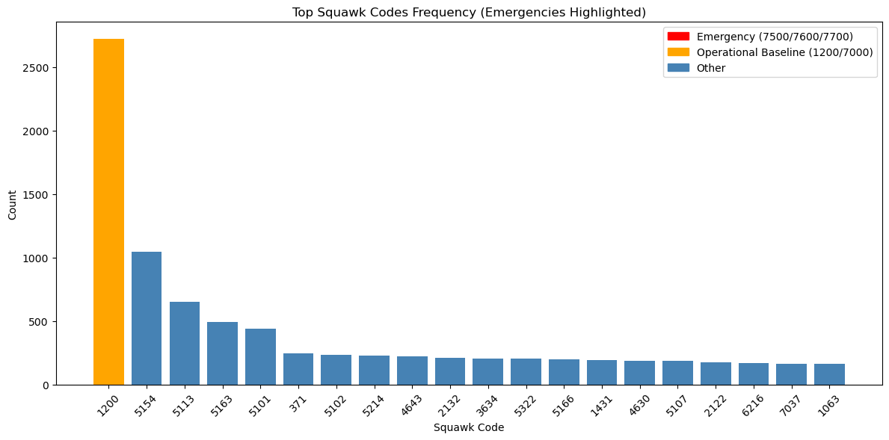

# ============================================
# OpenSky EDA Script (Polars Version)
# ============================================
from pathlib import Path
import polars as pl
import matplotlib.pyplot as plt
pl.Config.set_tbl_cols(-1) # show all columns
pl.Config.set_tbl_rows(1000) # number of visible rows
pl.Config.set_tbl_width_chars(200) # wider table
BASE_DIR = Path.cwd()
data_dir = BASE_DIR / ".." / ".." / ".." / "data_pipeline" / "raw_data"
# extract_dir = BASE_DIR / "raw_data" / "extracted"
# INPUT_FILE = "bwi_states_smoothed_resampled.csv"
INPUT_FILE = "/home/jon/Documents/grad_school/OR568/project/OR568_ML_Project/data_pipeline/raw_data/bwi_states_2022_06_27_raw.csv"
# --------------------------------------------
# LOAD DATA
# --------------------------------------------
df = pl.read_csv(INPUT_FILE, try_parse_dates=True)
print("\n===== BASIC INFO =====")
print("Rows:", df.height)
print("Columns:", len(df.columns))
# --------------------------------------------
# TIME RANGE
# --------------------------------------------
print("\n===== TIME RANGE =====")
print(df.select([
pl.col("time").min().alias("start_time"),
pl.col("time").max().alias("end_time")
]))
# --------------------------------------------
# UNIQUE AIRCRAFT
# --------------------------------------------
print("\nUnique aircraft:", df.select(pl.col("icao24").n_unique()).item())
# --------------------------------------------
# NULL COUNTS
# --------------------------------------------
print("\n===== MISSING VALUES =====")
nulls = df.select([
pl.all().null_count()
])
print(nulls)
# ============================================
# SQUAWK FREQUENCY DISTRIBUTION
# ============================================
print("\n===== SQUAWK FREQUENCY =====")
# -----------------------------------
# Frequency table
# -----------------------------------
squawk_freq = (
df.filter(pl.col("squawk").is_not_null())
.group_by("squawk")
.len()
.sort("len", descending=True)
)
print(squawk_freq.head(20))
top_sq = squawk_freq.head(20)
# -----------------------------------
# Highlight logic
# -----------------------------------
EMERGENCY_CODES = {"7500", "7600", "7700"}
IMPORTANT_CODES = {"1200", "7000"}
colors = []
for sq in top_sq["squawk"].cast(str):
if sq in EMERGENCY_CODES:
colors.append("red") # emergencies
elif sq in IMPORTANT_CODES:
colors.append("orange") # operational baseline
else:
colors.append("steelblue") # normal
# -----------------------------------
# Plot
# -----------------------------------
plt.figure(figsize=(12,6))
plt.bar(
top_sq["squawk"].cast(str),
top_sq["len"],
color=colors
)
plt.title("Top Squawk Codes Frequency (Emergencies Highlighted)")
plt.xlabel("Squawk Code")
plt.ylabel("Count")
plt.xticks(rotation=45)
# legend
import matplotlib.patches as mpatches
legend_handles = [
mpatches.Patch(color="red", label="Emergency (7500/7600/7700)"),
mpatches.Patch(color="orange", label="Operational Baseline (1200/7000)"),
mpatches.Patch(color="steelblue", label="Other")
]
plt.legend(handles=legend_handles)
plt.tight_layout()
plt.show()
# # ============================================
# # MOVEMENT STATISTICS
# # ============================================
# print("\n===== NUMERIC SUMMARY =====")
# numeric_cols = [
# "velocity",
# "geoaltitude",
# "baroaltitude",
# "vertrate",
# "heading"
# ]
# summary = df.select([
# pl.col(c).mean().alias(f"{c}_mean") for c in numeric_cols
# ] + [
# pl.col(c).std().alias(f"{c}_std") for c in numeric_cols
# ] + [
# pl.col(c).min().alias(f"{c}_min") for c in numeric_cols
# ] + [
# pl.col(c).max().alias(f"{c}_max") for c in numeric_cols
# ])
# print(summary)
# # ============================================
# # OPERATIONAL FLAGS
# # ============================================
# print("\n===== OPERATIONAL FLAGS =====")
# flags = df.select([
# (pl.col("onground") == True).mean().alias("pct_onground"),
# (pl.col("alert") == True).mean().alias("pct_alert"),
# (pl.col("spi") == True).mean().alias("pct_spi")
# ])
# print(flags)
# # ============================================
# # PER AIRCRAFT SUMMARY (ML READY)
# # ============================================
# print("\n===== AIRCRAFT LEVEL SUMMARY =====")
# aircraft_summary = (
# df.group_by("icao24")
# .agg([
# pl.col("velocity").mean().alias("avg_velocity"),
# pl.col("geoaltitude").max().alias("max_altitude"),
# pl.col("time").min().alias("start_time"),
# pl.col("time").max().alias("end_time"),
# pl.len().alias("samples")
# ])
# )
# print(aircraft_summary.head())
# # Optional save for ML
# aircraft_summary.write_csv("aircraft_summary.csv")
# print("\nSaved aircraft summary → aircraft_summary.csv")
===== BASIC INFO =====
Rows: 67831
Columns: 16
===== TIME RANGE =====
shape: (1, 2)
┌────────────┬────────────┐
│ start_time ┆ end_time │
│ --- ┆ --- │
│ i64 ┆ i64 │
╞════════════╪════════════╡
│ 1656288010 ┆ 1656374390 │
└────────────┴────────────┘
Unique aircraft: 1068
===== MISSING VALUES =====
shape: (1, 16)
┌──────┬────────┬─────┬─────┬──────────┬─────────┬──────────┬──────────┬──────────┬───────┬─────┬────────┬──────────────┬─────────────┬───────────────┬─────────────┐
│ time ┆ icao24 ┆ lat ┆ lon ┆ velocity ┆ heading ┆ vertrate ┆ callsign ┆ onground ┆ alert ┆ spi ┆ squawk ┆ baroaltitude ┆ geoaltitude ┆ lastposupdate ┆ lastcontact │
│ --- ┆ --- ┆ --- ┆ --- ┆ --- ┆ --- ┆ --- ┆ --- ┆ --- ┆ --- ┆ --- ┆ --- ┆ --- ┆ --- ┆ --- ┆ --- │
│ u32 ┆ u32 ┆ u32 ┆ u32 ┆ u32 ┆ u32 ┆ u32 ┆ u32 ┆ u32 ┆ u32 ┆ u32 ┆ u32 ┆ u32 ┆ u32 ┆ u32 ┆ u32 │
╞══════╪════════╪═════╪═════╪══════════╪═════════╪══════════╪══════════╪══════════╪═══════╪═════╪════════╪══════════════╪═════════════╪═══════════════╪═════════════╡
│ 0 ┆ 0 ┆ 0 ┆ 0 ┆ 2451 ┆ 2451 ┆ 2451 ┆ 1395 ┆ 0 ┆ 0 ┆ 0 ┆ 5627 ┆ 3164 ┆ 3729 ┆ 0 ┆ 0 │
└──────┴────────┴─────┴─────┴──────────┴─────────┴──────────┴──────────┴──────────┴───────┴─────┴────────┴──────────────┴─────────────┴───────────────┴─────────────┘
===== SQUAWK FREQUENCY =====
shape: (20, 2)
┌────────┬──────┐
│ squawk ┆ len │
│ --- ┆ --- │
│ i64 ┆ u32 │
╞════════╪══════╡
│ 1200 ┆ 2721 │
│ 5154 ┆ 1044 │
│ 5113 ┆ 652 │
│ 5163 ┆ 490 │
│ 5101 ┆ 437 │
│ 371 ┆ 244 │
│ 5102 ┆ 231 │
│ 5214 ┆ 230 │
│ 4643 ┆ 220 │
│ 2132 ┆ 208 │
│ 3634 ┆ 207 │
│ 5322 ┆ 202 │
│ 5166 ┆ 199 │
│ 1431 ┆ 193 │
│ 4630 ┆ 184 │
│ 5107 ┆ 184 │
│ 2122 ┆ 176 │
│ 6216 ┆ 168 │
│ 7037 ┆ 164 │
│ 1063 ┆ 161 │
└────────┴──────┘